my treasure box
－1999/3/3－
この旅も、やっと折り返し地点に来ました。今日は千葉、そしてアクアライン経由で神奈川に行き、いったん我が家の清水市に戻ってきました。
| ○千葉県丸山町 発 |
| ＝＞ 国道１２８号線 －＞ 国道１２７号線 －＞ 東京湾アクアライン －＞ 首都高速湾岸線 －＞ 国道１６号線 －＞ 国道２４６号線 －＞ 国道１号線＝＞ |
| ○静岡県清水市 着 |
～丸山町ローズマリーガーデン～
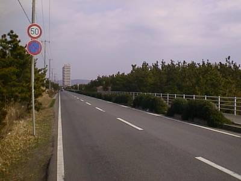
とりあえず、千葉県丸山町にあるローズマリーガーデンに向かいます。この道はフラワーラインと呼ばれる花の道です。道路沿いには花壇が置かれています。
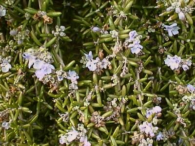
この花壇にはこのような花が。ハーブの図鑑を見たら、これがローズマリーのようです。「和名マンネンロウ。真っ直ぐに伸びた茎に短く細い棒のような葉をつけ、冬から春先にかけて白い小花を開花させます。」（ナツメ社，薬になるハーブより抜粋）
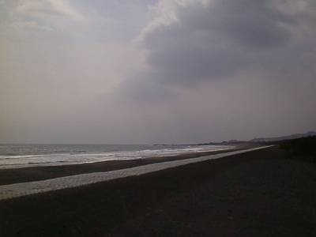
この道路をはずれるとすぐに海が広がります。
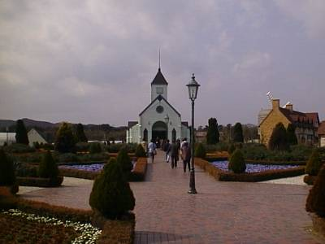
ここがローズマリーガーデンです。
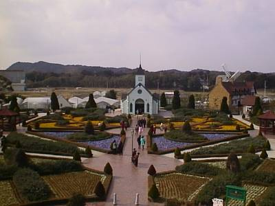
これが展望台から見た図。
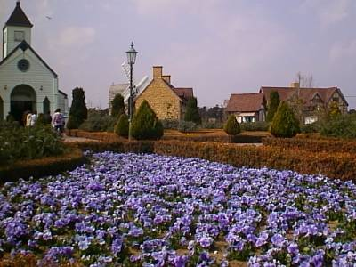
色とりどりの花が咲いていました。青そして・・・。
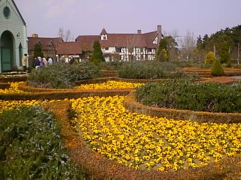
黄色。
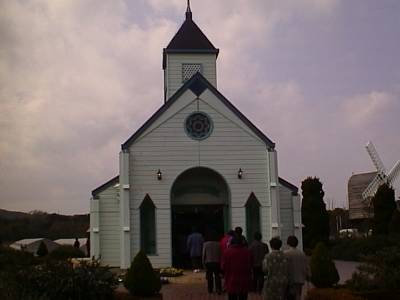
そして、これが中心にある建物です。この中では、花を売っています。
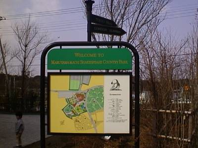
「丸山町のシェイクスピアの町へようこそ」と書いてあります・・・。上には「東京８０ｋｍ、イギリス１６５００ｋｍ」という立て札がついています。確かに。否定はしないさ。
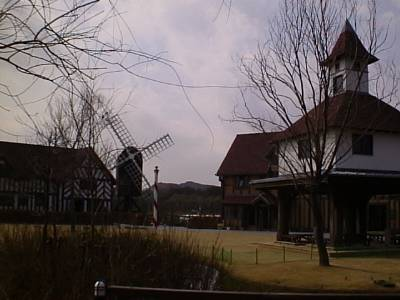
となりには風車も見られます。
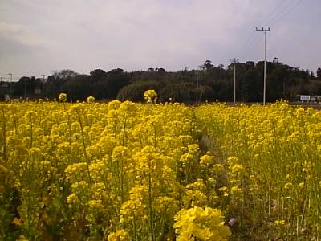
菜の花畑です。辺り一面というわけではないですが、見事に咲き誇っています。春を感じさせる瞬間です。
～東京湾アクアライン～
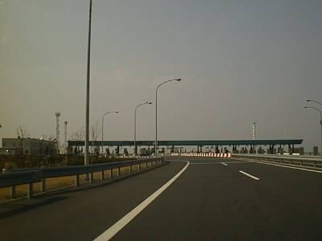
今回の旅での密かな目標が、木更津から川崎にまで走っているこのアクアライン見学です。千葉県の木更津側から入りました。まずこれが料金所。ちなみにこれから示す写真の中には走っている車の中から撮ったものもあります。よい子はまねをしないように・・・。
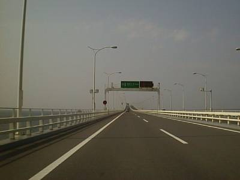
橋の上。やっぱり新しいだけあってきれいです。
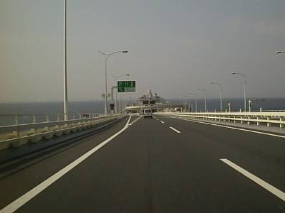
どんどん進むと、「海ほたる」が見えてきます。海ほたるはアクアラインのパーキングエリアのことです。
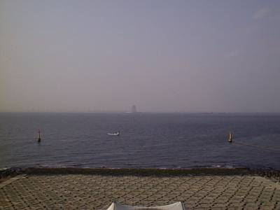
これが、海ほたるの上から川崎側を見た風景です。見えづらいですが、海の向こうの真ん中に建物が見えます。これが「風の塔」。アクアラインのトンネル内の換気に使われる空気の通り道です。
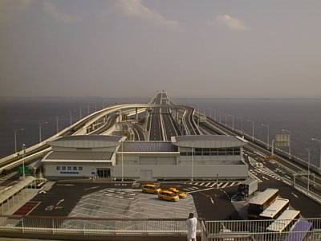
そして、これが木更津側。
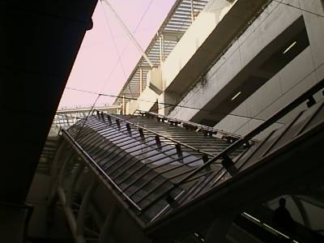
海ほたるは五階建てです。駐車場、各種レストラン、道路情報のディスプレイはもちろんのこと、ゲームセンターや、災害時の対処などを示した博物館的な部屋もあり、コンビニもあります（某ファミリーマート）。そして一歩外にでると公園のようになっているため、まさにデートスポット。
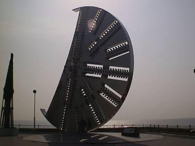
これはアクアラインのトンネルを掘ったシールドマシンの先端部分です。このモニュメントの下に人が立っているのがわかるでしょうか。非常に大きなものです。
～首都高速湾岸線～
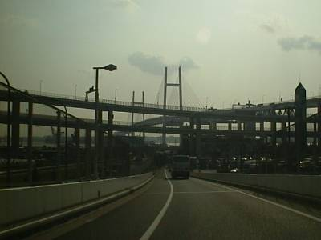
アクアラインを抜け、横浜に向かいます。するととてつもなく巨大な構造物が見えてきます。
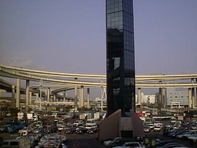
途中にサービスエリアがあったのでよりました。そこからの写真。
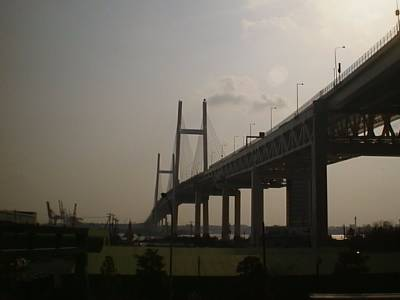
そして横浜ベイブリッジ。
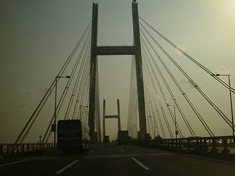
横浜ベイブリッジ上での写真。
この後は再び静岡県清水市へと戻ってきました。
さて今度は南です。つぎはどこへいこうかな♪